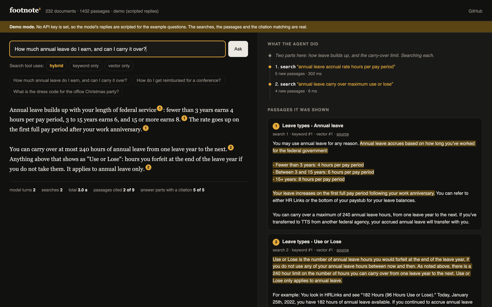
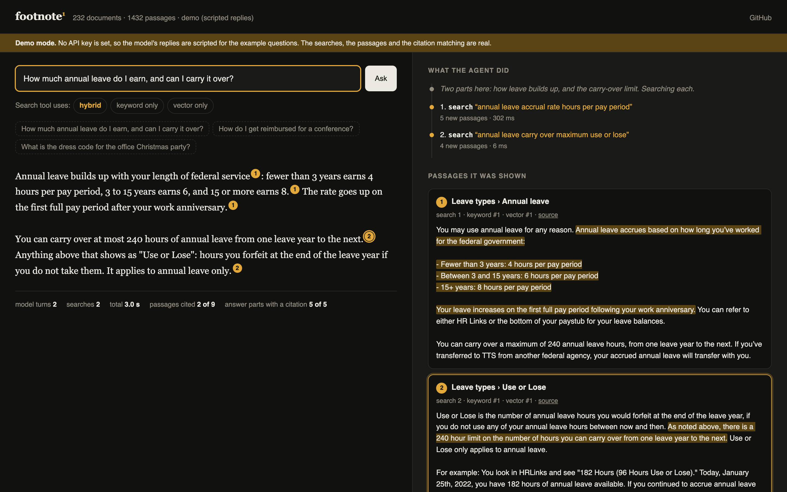
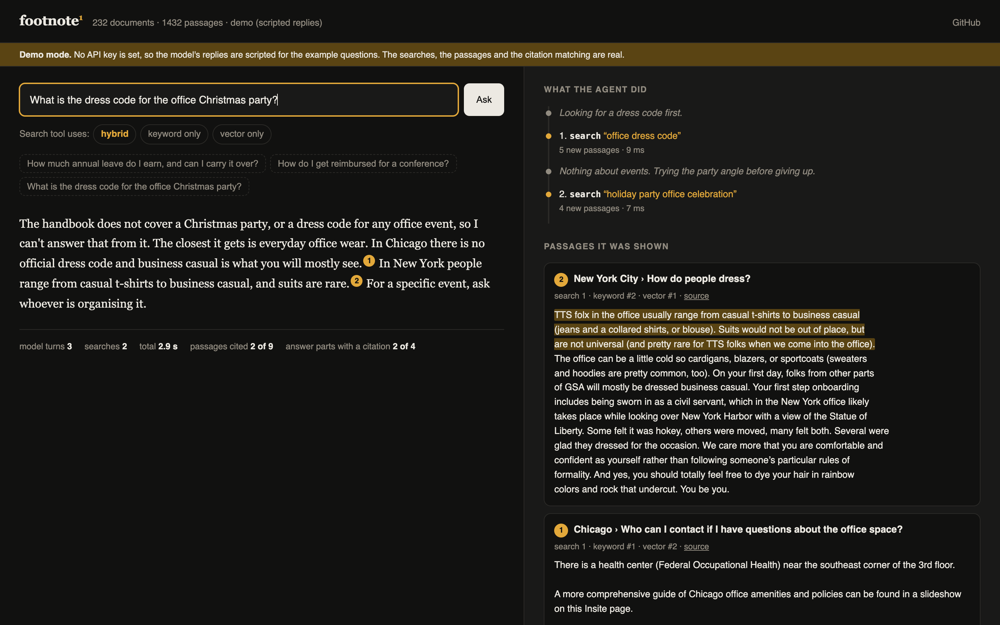

An AI research agent for your documents. It decides what to search for, searches again when results are thin, and every claim links to the exact sentence it came from.
Ibrar Yunus · AI engineer · ibraryunus.com/ai-engineer · linkedin.com/in/ibrar-yunus · github.com/IbrarYunus/footnote
"Chat with our documents" is the first thing most companies ask an LLM to do.
The usual build is a fixed pipeline: search once with the user's words, paste the results into a prompt. A two-part question gets half an answer.
And it fails quietly. The answer is fluent, and one sentence in it came from nowhere. Someone acts on that sentence.
One rule: an answer you cannot check is not an answer.

A two-part question. The agent ran two searches, in the handbook's wording, one per part.
Right: its working note, each query, and the passages that came back. Cited ones rise to the top; the rest stay visible so you can see what it ignored.
Left: the answer, streamed. Each chip is a citation returned by the API.

Search results go back to the model one sentence per block. The API returns which result and which sentences each claim rests on, and checks them. The model cannot cite text that is not there.
Prompting a model to type "[1]" gives markers that look right and are sometimes wrong. This does not.

The handbook has nothing on Christmas parties. The agent searched for a dress code, tried the party angle, then stopped. The answer says what is missing and cites the nearby material it did find.
The prompt explains why guessing is harmful rather than shouting "never". The eval set includes ten questions like this one.
| Search mode | Correct passage is #1 | In top 3 | In top 8 | MRR |
|---|---|---|---|---|
| Keyword only (BM25) | 28.8% | 55.9% | 64.4% | 0.415 |
| Vector only | 44.1% | 67.8% | 84.7% | 0.581 |
| Hybrid, equal weights (first attempt) | 45.8% | 71.2% | 74.6% | 0.580 |
| Hybrid, 70/30 towards vectors | 45.8% | 74.6% | 84.7% | 0.608 |
One search call per question, the floor the agent starts from. 59 questions written by Claude from sampled passages, told to avoid the passage's wording. Small, synthetic, and the weights were tuned on it, so read the direction, not the decimals. The point: without the eval, the equal-weight version would have shipped.
Measured: the search tool, on 59 questions (previous slide), and the pipeline code, by unit tests in CI.
Built, not yet run: the agent eval. 59 answerable questions plus 10 the handbook cannot answer. A second model grades each answer as correct, partial, wrong or abstained.
No answer-quality numbers are claimed until that suite has run on the agentic version.
Screenshots in this deck are from demo mode: scripted model turns, real searches, real citation matching.
Next: cross-encoder reranking, follow-up question rewriting, a human-written eval set, passage-level access control.
AI engineer. I build LLM systems that can be checked.
ibraryunus.com/ai-engineer
linkedin.com/in/ibrar-yunus
github.com/IbrarYunus · footnote · frontdesk · groundwork